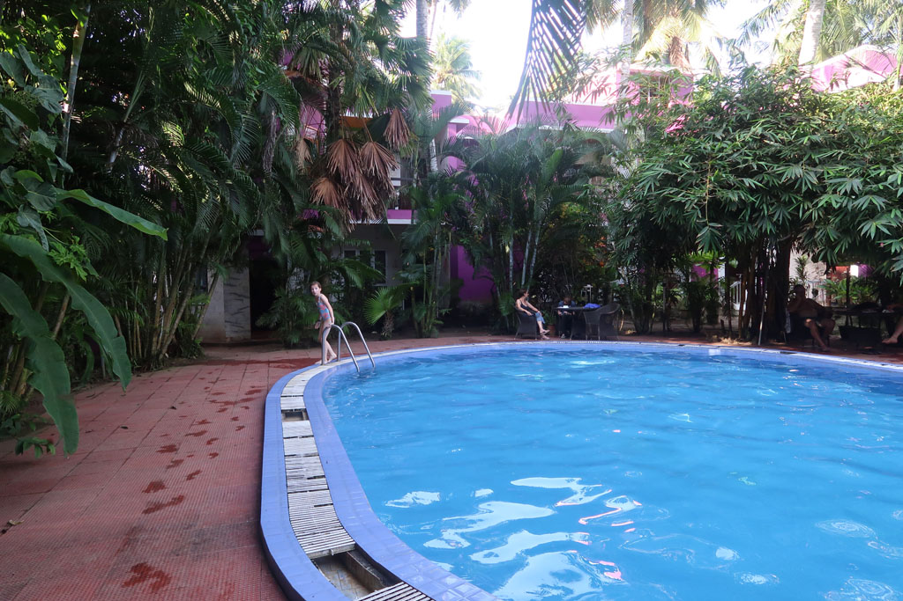

/ Kovalam jour 2

Nuit infernale, les moustiques indiens sont résistants à l’Insecte écran, formule tropicale… Je passe une partie de la nuit dehors à coté de la piscine, c’est plus supportable. Et dès que le soleil se lève je pars en promenade.

8h30 je reviens, tout le monde est levé, on part en balade pour finir dans un petit restaurant prendre notre petit déjeuner. Purri + curry, tartines beurre confiture, cafés.
10h00 le phare ouvre ses portes, nous le visitons. Très belle vue sur les environs.
11h30 nous allons visiter le conservatoire de poissons du coin.
12h00 de retour à l’hôtel après un passage café.
Après midi piscine.

18h00 nous retrouvons des amis pour boire une bière et aller manger. C’est un couple de français croisés deux ans auparavant au Vietnam à Dalat avec qui nous avons gardé contact.
22h00 dodo après nous être équipés de produit anti moustique local, bien plus efficace (Odomos)